Etapa 06 de 10
Análise dos resultados
Lemos as 27 respostas do questionário e juntamos o que mais chamou a nossa atenção.
Ao analisar os resultados do questionário, percebemos que o uso do celular já faz parte da rotina da maioria dos participantes, mas isso não significa necessariamente que eles tenham facilidade ou segurança para utilizar aplicativos bancários. Mesmo entre pessoas que usam o celular todos os dias, ainda aparecem dificuldades para encontrar funções, entender algumas informações e, principalmente, ter confiança no momento de confirmar uma transação.
Um ponto que chamou bastante a nossa atenção foi a questão da segurança. O medo de golpes e o medo de cometer algum erro apareceram como alguns dos principais motivos para evitar transações pelo aplicativo. Além disso, a grande maioria considerou que alertas de segurança ajudam durante o uso e que uma tela final mostrando claramente o nome do destinatário, o banco e o valor antes da confirmação deixaria a transação mais segura. Isso fez com que percebêssemos que o problema não está somente no tamanho das letras ou na quantidade de botões, mas também na insegurança de não saber se a operação está sendo feita corretamente.
Também observamos que existe uma diferença entre usar o aplicativo bancário e realmente preferir utilizá-lo. Uma parte significativa dos participantes utiliza aplicativos bancários com alguma frequência, porém muitos ainda preferem caixa eletrônico, agência bancária ou até mesmo pedir ajuda para outra pessoa. Isso mostra que o fato de uma pessoa conseguir utilizar determinada tecnologia não significa necessariamente que ela se sinta confortável ou independente ao utilizá-la.
Em relação às funcionalidades, percebemos que algumas operações são muito mais utilizadas do que outras. Consultar saldo e extrato e realizar PIX aparecem com mais frequência, enquanto outras funções são menos utilizadas. Esse resultado reforça a ideia de que um modo mais simples, mostrando primeiro as funcionalidades mais importantes, pode facilitar bastante a experiência. Textos e botões maiores também foram considerados úteis, mas recursos ligados à segurança, como uma confirmação mais clara antes de enviar dinheiro e alertas contra golpes, tiveram bastante destaque.
Outro resultado interessante foi a forma como os participantes procuram ajuda. A família continua tendo um papel importante, principalmente entre quem possui menor familiaridade com tecnologia. Porém, as explicações fornecidas pelo próprio aplicativo também apareceram como uma forma de ajuda bastante desejada. Para o nosso grupo, isso mostra uma oportunidade importante: se o aplicativo explicar melhor cada etapa e oferecer ajuda no momento da dúvida, ele pode diminuir a necessidade de o usuário depender constantemente de familiares ou conhecidos.
Gráficos do questionário
Resultado de cada pergunta, direto do formulário (27 respostas).
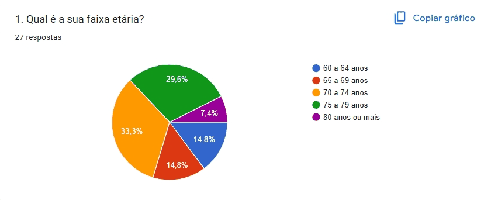
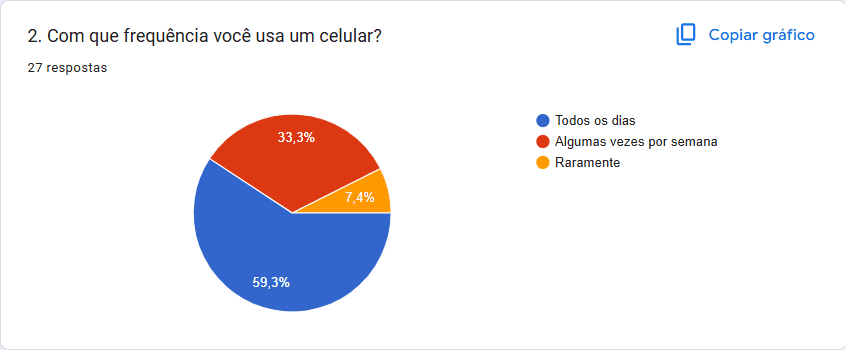
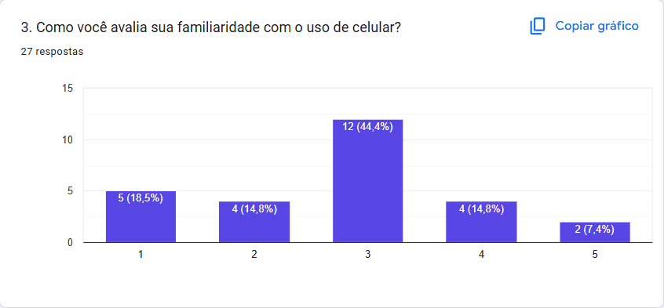
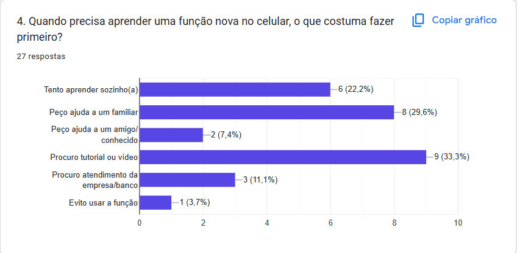
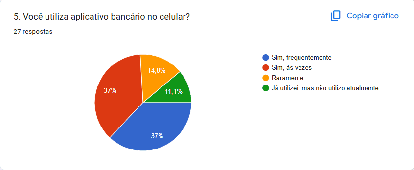
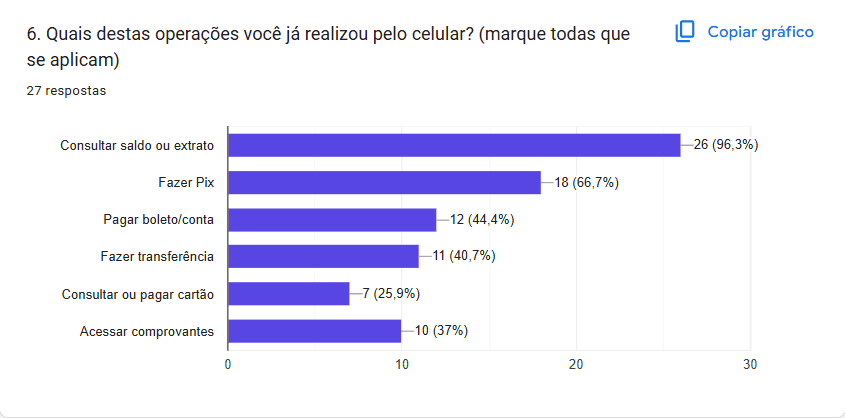
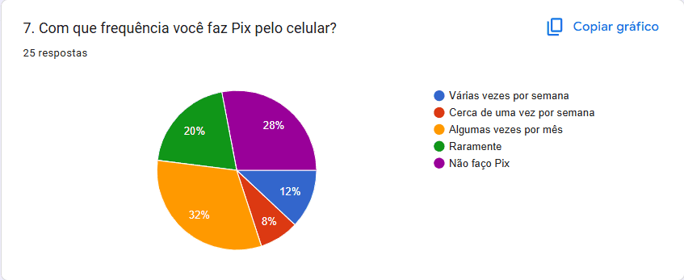
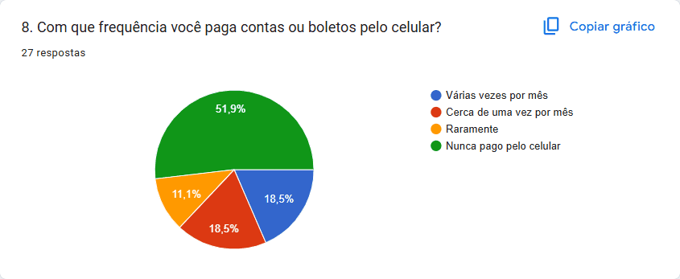
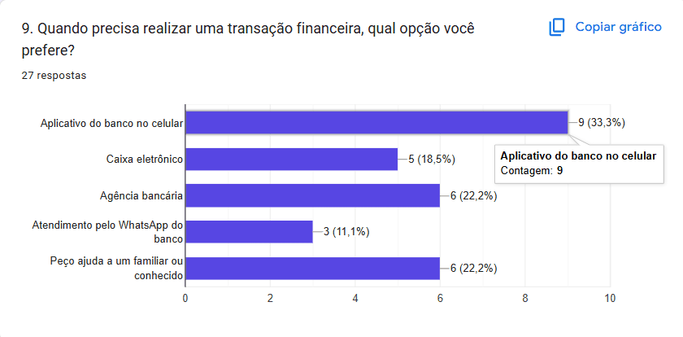
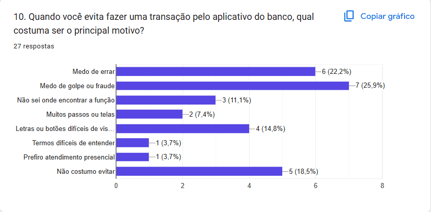
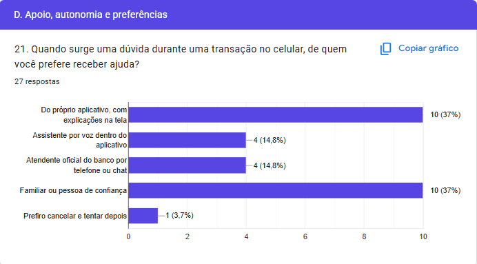
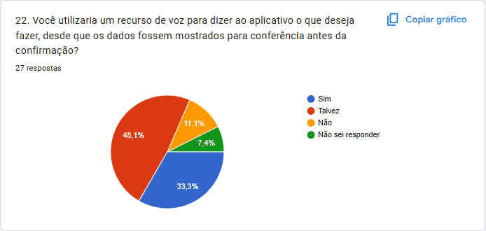
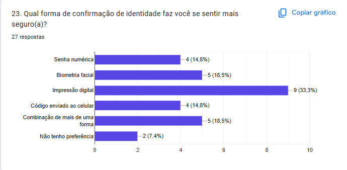
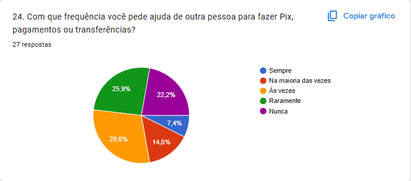
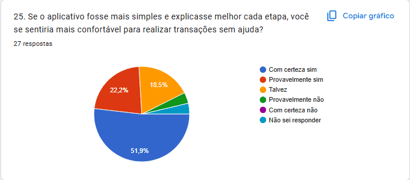
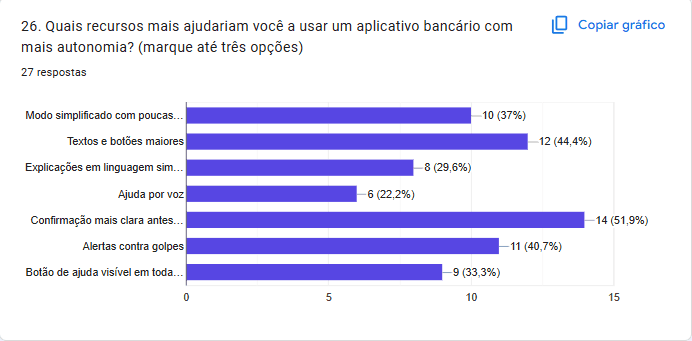